Tercera parte (R y Python): Calidad del café
Instrucciones
Se usará el conjunto de datos de encuesta de café (coffee_ratings.csv).
- Actividad 0: Realice un análisis de valores faltantes del objeto
datos - Actividad 1: Crear una columna llamada
color2que se base en los valores de la columnacolor, que asigne el valor NA sicolor == NA, “#00FF66” sicolor == 'Green', “#CCEBC5” sicolor == 'Bluish-green'y “#BFFFFF” sicolor == 'Blue-green' - Actividad 2: Crear una columna llamada
bag_weight2que se base en los valores de la columnabag_weight, que sólo contenga el valor numérico de ésta. Es decir,bag_weight2debe ser numérica. ¿Cuántas observaciones llevaron a ambigüedad para crear esta nueva columna? - Actividad 3: Crear dos columnas llamadas
method1ymethod2que se basen en los valores de la columnaprocessing_method, dividiendo en dos partes los valores dicha columna. ¿Cuántas observaciones llevaron a ambigüedad para crear esta nueva columna? - Actividad 4: Crear tres columnas llamadas
expiration_day,expiration_monthyexpiration_yearque se basen en los valores de la columnaexpiration. ¿Cuántas observaciones llevaron a ambigüedad para crear estas nuevas columnas? - Actividad 5: Crear dos columnas llamadas
harvest_mesyharvest_anioque se basen en los valores de la columnaharvest_year, dividiendo en dos partes los valores dicha columna. ¿Cuántas observaciones llevaron a ambigüedad para crear esta nueva columna? - Actividad 6: Elabore una visualización con
ggplot2que identifique alguna relación entre las columnastotal_cup_points,acidityycolor2de tal forma que se puedan identificar los colores de la variablecolor2. Es decir, debemos ver los colores, “#00FF66”, “#CCEBC5” y “#BFFFFF”. - Actividad 7: Elabore una visualización de densidad con
ggplot2de la variablebag_weight2diferenciando a los valores despecies. - Actividad 8: Elabore una visualización que relacione el año/mes de expiración con el
total_cup_pointssólo de los granos mexicanos, brasileños, colombianos y guatemaltecos. - Actividad 9: Elabore una visualización con
ggplot2que relacione el mes de expiración con elaltitude_mean_meters,altitude_low_metersyaltitude_high_meterssólo de los granos mexicanos, brasileños, colombianos y guatemaltecos de los años de expiración 2016 y 2017. - Actividad 10: Elabore una visualización con
ggplot2que relacione elaftertaste,acidity,bodyyspeciesen un mismo canvas.
Importante: Sus visualizaciones deben tener formato suficientemente bueno para publicar en alguna revista.
Librerías y datos
Cargamos las librerías necesarias de R y Python.
library(tidyverse) # Incluye dplyr, ggplot2, stringr y lubridate
library(scales)
library(skimr)import pandas as pd
import numpy as np
import matplotlib.pyplot as plt
plt.ioff()
import matplotlib.dates as mdates
from matplotlib.gridspec import GridSpec
import seaborn as sns
from scipy.interpolate import make_interp_spline
plt.ioff()<contextlib.ExitStack object at 0x0000027BAA1C0050>
<contextlib.ExitStack object at 0x0000027BAD034B90>Se usará el conjunto de datos de encuesta de café coffee_ratings.csv
datos <- read_csv("../datos/coffee_ratings.csv", show_col_types = FALSE)
datosDimensión del conjunto de datos:
dim(datos)[1] 1339 43También los cargamos en python:
datos = pd.read_csv("../datos/coffee_ratings.csv")Preferimos imprimir dataframes de pandas grandes desde R para una mejor visualización. Observe la diferencia:
# pandas DataFrame
datos.head() total_cup_points species ... altitude_high_meters altitude_mean_meters
0 90.58 Arabica ... 2200.0 2075.0
1 89.92 Arabica ... 2200.0 2075.0
2 89.75 Arabica ... 1800.0 1700.0
3 89.00 Arabica ... 2200.0 2000.0
4 88.83 Arabica ... 2200.0 2075.0
[5 rows x 43 columns]# Accedemos a objetos de python con la siguiente sintaxis
py$datos |> head()datos.shape(1339, 43)Actividad 0
Realice un análisis de valores faltantes del objeto datos
Resumen de valores faltantes en R
resumen <- skim(datos) %>%
as_tibble()
resumen <- resumen %>%
mutate(missing_rate = 1 - complete_rate)
resumen %>%
select(skim_variable, skim_type, n_missing, missing_rate) %>%
arrange(desc(missing_rate))Visualización de valores faltantes.
resumen %>%
select(skim_variable, missing_rate) %>%
arrange(desc(missing_rate)) %>%
ggplot(aes(x = reorder(skim_variable, missing_rate), y = missing_rate)) +
geom_col(fill = "orange") +
coord_flip() +
labs(
x = "variable",
y = "% de faltantes",
title = "Valores faltantes por variable"
)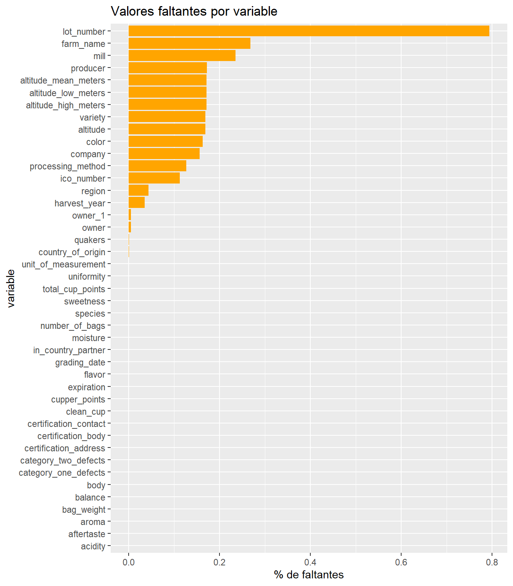
Resumen de valores faltantes en Python
resumen = pd.DataFrame({
"variable": datos.columns,
"n_missing": datos.isna().sum().values,
"missing_rate": datos.isna().mean().values
})
# Ordenar de mayor a menor porcentaje faltante
resumen = resumen.sort_values(
by = "missing_rate",
ascending = False
)
resumen["variable"] = resumen["variable"].astype(str)
resumen["missing_rate"] = pd.to_numeric(
resumen["missing_rate"]
)py$resumensns.barplot(
data=resumen,
x="missing_rate",
y="variable",
color="hotpink"
)
plt.title("Valores faltantes por variable")
plt.xlabel("% de faltantes")
plt.ylabel("Variable")
plt.tight_layout()
plt.show()
plt.close()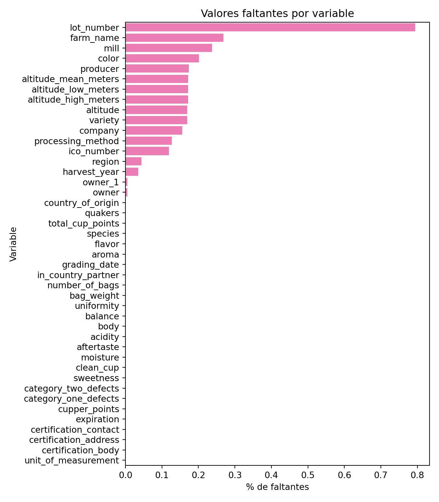
Observamos que lot_number (número de lote del café evaluado) es la variable que presenta la mayor proporción de valores faltantes (79%), seguida por farm_name (26%) y mill (molino donde se procesó el café, 23%), lo que sugiere que no todas las fincas o productores documentan con el mismo nivel de detalle la información de sus lotes y procesos de molienda.
Por otra parte, identificamos un patrón de ausencia conjunta en las variables geográficas relacionadas con la altitud, pues los registros con valores faltantes en altitude_low_meters, también presentan datos faltantes en altitude_high_meters y altitude_mean_meters. De manera similar, los registros con valores faltantes en altitude, tienden también a presentar valores ausentes en la variable variety. Lo que indica que esos faltantes no son aleatorios, sino sistemáticos.
No obstante, las variables de evaluación sensorial (aroma, acidity, body, balance, flavor, aftertaste, cupper_points, sweetness, uniformity, clean_cup) y las de clasificación (total_cup_points, species) están prácticamente completas para efectos posteriores de análisis.
Actividad 1
Crear una columna llamada color2 que se base en los valores de la columna color, que asigne el valor NA si color == NA, "#00FF66" si color == 'Green', "#CCEBC5" si color == 'Bluish-green' y "#BFFFFF" si color == 'Blue-green'
R
Crear columna color2:
datos$color2 <- dplyr::case_when(
is.na(datos$color) ~ NA_character_,
datos$color == "Green" ~ "#00FF66",
datos$color == "Bluish-Green" ~ "#CCEBC5",
datos$color == "Blue-Green" ~ "#BFFFFF",
TRUE ~ NA_character_
)Visualización de la nueva columna
datos %>% distinct(color, color2)Python
datos['color2'] = np.select(
[
datos['color'].isna(),
datos['color'] == "Green",
datos['color'] == "Bluish-Green",
datos['color'] == "Blue-Green"
],
[
None,
"#00FF66",
"#CCEBC5",
"#BFFFFF"
],
default = None
)
sub_datos = datos[['color', 'color2']].drop_duplicates()
print(sub_datos) color color2
0 Green #00FF66
2 NaN None
5 Bluish-Green #CCEBC5
33 Blue-Green #BFFFFFActividad 2
Crear una columna llamada bag_weight2 que se base en los valores de la columna bag_weight, que sólo contenga el valor numérico de ésta. Es decir, bag_weight2 debe ser numérica. ¿Cuántas observaciones llevaron a ambigüedad para crear esta nueva columna?
Obteniendo los valores únicos de la columna bag_weight, se identificaron varias ambigüedades que se pueden clasificar o agrupar en 4 casos: - Caso (kg, lbs): Las observaciones contienen unidades mixtas (kg seguido de lbs). - Caso (lbs): Las observaciones están registradas en lbs. - Caso (kg): Las observaciones están registradas en kg. - Caso (#): Las observaciones no muestran ningún tipo de medida, únicamente el valor numérico.
Para estandarizar la misma unidad de medida, se decidió trabajar con kg, entonces las observaciones en lbs se multiplicaron por el factor de conversión a kg (1lb = 0.453592 kg), los demás casos permanecieron sin cambios, únicamente se extrajo su valor numérico. De esta forma se evitan mayores ambigüedades.
R
datos <- datos %>%
mutate(
bag_weight2 = case_when(
#Si tenemos kg (aunque también diga lbs), tomamos los kg
str_detect(bag_weight, "kg") ~ parse_number(bag_weight),
#Si sólo tenemos lbs, convertimos a kg
str_detect(bag_weight, "lbs") ~ parse_number(bag_weight) * 0.453592,
#Si sólo es número, mantenemos las unidades
TRUE ~ parse_number(bag_weight)
)
)datos %>% distinct(bag_weight,bag_weight2)Python
num = datos["bag_weight"].str.extract(r"(\d+\.?\d*)")[0].astype(float) # regex d/p/d
datos["bag_weight2"] = np.where(
datos["bag_weight"].str.contains("lbs") &
~datos["bag_weight"].str.contains("kg"),
num * 0.453592,
num,
)bagweight = datos[['bag_weight', 'bag_weight2']].drop_duplicates()py$bagweightActividad 3
Crear dos columnas llamadas method1 y method2 que se basen en los valores de la columna processing_method, dividiendo en dos partes los valores dicha columna. ¿Cuántas observaciones llevaron a ambigüedad para crear esta nueva columna?
R
Crear columnas method1 y method2:
datos <- datos %>%
mutate(
# str_split_fixed() devuelve una matriz, por eso usamos [,1] y [,2]
method1 = str_split_fixed(processing_method, "/", n = 2)[, 1] %>% str_trim(),
method2 = str_split_fixed(processing_method, "/", n = 2)[, 2] %>% str_trim(),
# Convertir strings vacíos a NA
method1 = na_if(method1, ""),
method2 = na_if(method2, "")
)Observaciones ambiguas:
NAs originales enprocessing_method.- Valores sin
"/"(no se pueden dividir en dos partes, e.g."Other").
na_originales <- sum(is.na(datos$processing_method))
sin_slash <- sum(!is.na(datos$processing_method) &
!str_detect(datos$processing_method, "/"))
ambiguedad_act3 <- na_originales + sin_slash
cat(sprintf("NAs originales en processing_method : %d\n", na_originales))
cat(sprintf("Registros sin '/' : %d\n", sin_slash))
cat(sprintf("Total observaciones ambiguas : %d\n", ambiguedad_act3))
cat("\nValores únicos resultantes:\n")
datos %>%
distinct(processing_method, method1, method2) %>%
print()NAs originales en processing_method : 170
Registros sin '/' : 26
Total observaciones ambiguas : 196
Valores únicos resultantes:
# A tibble: 6 × 3
processing_method method1 method2
<chr> <chr> <chr>
1 Washed / Wet Washed Wet
2 <NA> <NA> <NA>
3 Natural / Dry Natural Dry
4 Pulped natural / honey Pulped natural honey
5 Semi-washed / Semi-pulped Semi-washed Semi-pulped
6 Other Other <NA> Python
# Dividir por '/' en máximo 2 partes
split_cols = datos["processing_method"].str.split("/", n=1, expand=True)
datos["method1"] = split_cols[0].str.strip()
datos["method2"] = split_cols[1].str.strip() if 1 in split_cols.columns else np.nan
# Convertir strings vacíos a NaN
datos["method1"] = datos["method1"].replace("", np.nan)
datos["method2"] = datos["method2"].replace("", np.nan)
# Observaciones ambiguas:
# 1. NAs originales -> no hay información para dividir
# 2. Sin '/' -> sólo tiene una parte (e.g. "Other")
na_originales = datos["processing_method"].isna().sum()
sin_slash = (~datos["processing_method"].isna()) & (
~datos["processing_method"].str.contains("/", na=False)
)
ambiguedad_act3 = na_originales + sin_slash.sum()
print(f"NAs originales en processing_method : {na_originales}")
print(f"Registros sin '/' : {sin_slash.sum()}")
print(f"Total observaciones ambiguas : {ambiguedad_act3}")
print()
print("Valores únicos resultantes:")
print(
datos[["processing_method", "method1", "method2"]]
.drop_duplicates()
.to_string(index=False)
)NAs originales en processing_method : 170
Registros sin '/' : 26
Total observaciones ambiguas : 196
Valores únicos resultantes:
processing_method method1 method2
Washed / Wet Washed Wet
NaN NaN NaN
Natural / Dry Natural Dry
Pulped natural / honey Pulped natural honey
Semi-washed / Semi-pulped Semi-washed Semi-pulped
Other Other NoneActividad 4
Crear tres columnas llamadas expiration_day, expiration_month y expiration_year que se basen en los valores de la columna expiration. ¿Cuántas observaciones llevaron a ambigüedad para crear estas nuevas columnas?
R
Primero revisemos si hay algún valor faltante:
anyNA(datos$expiration)[1] FALSEVamos a utilizar la función mdy() (por month day year, pues las fechas están en formato Mes Día, Año) del paquete lubridate para convertir la columna expiration a tipo fecha.
A pesar de que la función mdy() puede reconocer muchos formatos diferentes en los que una fecha puede estar escrito, primero hagamos unas validaciones rápidas para asegurarnos de que ninguna fecha será convertida incorrectamente.
Revisemos que la primera sección de cada string, antes del primer número, es el mes:
unique(sub("^([^0-9]+).*", "\\1", datos$expiration)) [1] "April " "May " "March " "September " "August "
[6] "June " "July " "December " "January " "October "
[11] "February " "November " En efecto, la primera parte de cada string es el nombre del mes. Ahora veamos si la última parte de cada string corresponde a un año:
unique(str_sub(datos$expiration, -5, -1)) [1] " 2016" " 2011" " 2014" " 2013" " 2017" " 2015" " 2012" " 2018"
[9] " 2019" "2018\n"Lo único raro es el valor que termina en el carácter de nueva línea ("\n"). Sin embargo, la función mdy() no tiene problemas en convertir una fecha que termine con ese carácter. Además, solo una fila tiene esta inconsistencia:
datos |>
filter(grepl("\\n$", expiration)) |>
select(expiration)mdy("November 15th, 2018\n")
class(mdy("November 15th, 2018\n"))[1] "2018-11-15"
[1] "Date"Extraigamos la sección de cada string que esté rodeadas de espacios, lo cual correspondería al día, su sufijo ordinal y una coma:
datos$expiration |>
str_extract("(?<=\\s).+?(?=[\\s])") |>
unique() |>
sort() [1] "10th," "11th," "12th," "13th," "14th," "15th," "16th," "17th," "18th,"
[10] "19th," "1st," "20th," "21st," "22nd," "23rd," "24th," "25th," "26th,"
[19] "27th," "28th," "29th," "2nd," "30th," "31st," "3rd," "4th," "5th,"
[28] "6th," "7th," "8th," "9th," Todos los valores son consistentes. Vamos a realizar una última validación para determinar si todas las strings tienen el mismo formato:
- Conjunto de caracteres correspondientes al mes. Ya sabemos que todos los meses están nombrados consistentemente.
- Un espacio.
- Un número más su sufijo ordinal y una coma.
- Un espacio.
- 4 dígitos, correspondientes al año. Ya vimos que todos los años están nombrados consistentemente.
Como ya vimos, una de las filas no cumple con este formato, ya que termina con el carácter de nueva línea, pero la función mdy() no tiene problemas para convertir correctamente esta string a tipo fecha.
datos |>
filter(!grepl("^([A-Za-z]+) ([0-9]+(?:st|nd|rd|th)), ([0-9]{4})$", expiration)) |>
select(expiration)Ahora sí convirtamos la columna expiration a tipo fecha con la función mdy(). Podemos extraer el día, mes y año con las funciones day(), month() y year() respectivamente. Echemos un vistazo al resultado y después actualicemos el dataframe.
datos |>
mutate(
expiration_date_type = mdy(expiration),
expiration_day = day(expiration_date_type),
expiration_month = month(expiration_date_type),
expiration_year = year(expiration_date_type)
) |>
select(expiration, expiration_date_type, expiration_day, expiration_month, expiration_year) |>
head(10)datos <- datos |>
mutate(
expiration_date_type = mdy(expiration),
expiration_day = day(expiration_date_type),
expiration_month = month(expiration_date_type),
expiration_year = year(expiration_date_type)
) |>
# Quitamos la columna intermedia que utilizamos para crear las de interés
select(-expiration_date_type)No hubo ninguna ambigüedad:
anyNA(datos$expiration_day)
anyNA(datos$expiration_month)
anyNA(datos$expiration_year)[1] FALSE
[1] FALSE
[1] FALSErange(datos$expiration_day)
range(datos$expiration_month)
range(datos$expiration_year)[1] 1 31
[1] 1 12
[1] 2011 2019Python
Ya vimos en la parte de R que todas las observaciones de esta columna siguen el mismo patrón, por lo que podemos usar expresiones regulares para obtener cada componente de la fecha.
# Crear nuevas columnas llamadas expiration_day, expiration_month y expiration_year
datos["expiration_day"] = datos["expiration"].str.extract(r"\s(\d+).*").astype(int)
datos["expiration_month"] = datos["expiration"].str.extract(r"(\w+).*")
datos["expiration_year"] = datos["expiration"].str.extract(r"\s(\d{4}).*").astype(int)
# Vistazo al resultado
datos[["expiration", "expiration_day", "expiration_month", "expiration_year"]].head(7) expiration expiration_day expiration_month expiration_year
0 April 3rd, 2016 3 April 2016
1 April 3rd, 2016 3 April 2016
2 May 31st, 2011 31 May 2011
3 March 25th, 2016 25 March 2016
4 April 3rd, 2016 3 April 2016
5 September 3rd, 2014 3 September 2014
6 September 17th, 2013 17 September 2013Actividad 5
Crear dos columnas llamadas harvest_mes y harvest_anio que se basen en los valores de la columna harvest_year, dividiendo en dos partes los valores dicha columna. ¿Cuántas observaciones llevaron a ambigüedad para crear esta nueva columna?
R
Primero revisemos si hay valores faltantes en la columna harvest_year
# ¿Cuantos valores faltantes contiene?
sum(is.na(datos$harvest_year))[1] 47Vemos que tiene 47 valores faltantes.
Ahora, ¿qué tipo de valores contiene la columna harvest_year?
# ¿qué tipo de valores contiene?
unique(datos$harvest_year) [1] "2014" NA
[3] "2013" "2012"
[5] "March 2010" "Sept 2009 - April 2010"
[7] "May-August" "2009/2010"
[9] "2015" "2011"
[11] "2016" "2015/2016"
[13] "2010" "Fall 2009"
[15] "2017" "2009 / 2010"
[17] "2010-2011" "2009-2010"
[19] "2009 - 2010" "2013/2014"
[21] "2017 / 2018" "mmm"
[23] "TEST" "December 2009-March 2010"
[25] "2014/2015" "2011/2012"
[27] "January 2011" "4T/10"
[29] "2016 / 2017" "23 July 2010"
[31] "January Through April" "1T/2011"
[33] "4t/2010" "4T/2010"
[35] "August to December" "Mayo a Julio"
[37] "47/2010" "Abril - Julio"
[39] "4t/2011" "Abril - Julio /2011"
[41] "Spring 2011 in Colombia." "3T/2011"
[43] "2016/2017" "1t/2011"
[45] "2018" "4T72010"
[47] "08/09 crop" Notamos que es una columna que registra fechas pero tiene serios problemas de calidad de datos. Es inconsistente en el formato de las fechas; mezcla texto en español e inglés; contiene datos de prueba como "mmm" y "TEST"; tiene errores tipográficos evidentes; contiene rangos de fechas; mezcla fechas en años, meses, estaciones del año, trimestres, etc.
A continuación, vamos extraer, cuando sea posible, el año y el mes de la columna harvest_year mediante expresiones regulares.
La nueva columna harvest_anio captura el primer año que aparece en la observación, mientras que harvest_mes captura el primer mes que aparece en la observación.
# Definir el patrón de meses en inglés y español
patron_meses <- "(Jan|Ene|Feb|Mar|Apr|Abr|May|Jun|Jul|Aug|Ago|Sep|Oct|Nov|Dec|Dic)"
# Crear columnas harvest_anio y harvest_mes a partir de harvest_year
datos <- datos %>%
mutate(
harvest_anio = case_when(
# Busca el primer grupo de 4 dígitos seguidos
str_detect(harvest_year, "\\b\\d{4}\\b") ~ str_extract(harvest_year, "\\b\\d{4}\\b"),
# Busca casos especiales
str_detect(harvest_year, "4T/10|72010") ~ "2010",
str_detect(harvest_year, "08/09") ~ "2008",
TRUE ~ NA_character_
) %>% as.numeric(),
# Extrae la primera palabra que parezca un mes
mes_corto = str_extract(harvest_year, regex(patron_meses, ignore_case = TRUE)),
harvest_mes = case_when(
# Convierte el mes corto a mes completo en inglés
str_detect(mes_corto, regex("Jan|Ene", ignore_case = T)) ~ "January",
str_detect(mes_corto, regex("Feb", ignore_case = T)) ~ "February",
str_detect(mes_corto, regex("Mar", ignore_case = T)) ~ "March",
str_detect(mes_corto, regex("Apr|Abr", ignore_case = T)) ~ "April",
str_detect(mes_corto, regex("May", ignore_case = T)) ~ "May",
str_detect(mes_corto, regex("Jun", ignore_case = T)) ~ "June",
str_detect(mes_corto, regex("Jul", ignore_case = T)) ~ "July",
str_detect(mes_corto, regex("Aug|Ago", ignore_case = T)) ~ "August",
str_detect(mes_corto, regex("Sep", ignore_case = T)) ~ "September",
str_detect(mes_corto, regex("Oct", ignore_case = T)) ~ "October",
str_detect(mes_corto, regex("Nov", ignore_case = T)) ~ "November",
str_detect(mes_corto, regex("Dec|Dic", ignore_case = T)) ~ "December",
TRUE ~ NA_character_
)
) %>%
select(-mes_corto) # Elimina la variable temporalVisualización de las nuevas columnas:
datos %>% distinct(harvest_year, harvest_anio, harvest_mes) %>% head()¿Cuántas observaciones llevaron a ambigüedad para crear estas nuevas columnas?
Para la columna harvest_year consideramos que las observaciones que llevaron a ambigüedad en las columnas harvest_anio y harvest_mes son:
- valores faltantes
- observaciones que no contienen año
- observaciones que no contienen mes
- observaciones que contienen estaciones y trimestres
- observaciones que no son fechas
- observaciones que provienen de rangos de fechas
# Identificar ambigüedades
ambiguos_act5_R <- datos %>%
dplyr::filter(
is.na(harvest_year) |
is.na(harvest_anio) |
is.na(harvest_mes) |
str_detect(harvest_year, "\\d[Tt]") |
str_detect(harvest_year, regex("spring|fall|winter|summer", ignore_case = TRUE)) |
str_detect(harvest_year, "mmm|TEST") |
str_detect(harvest_year, "-|/| to | a |Through")
)
# Contar ambigüedades
total_ambiguos_act5_R <- nrow(ambiguos_act5_R)
print(paste(
"Número de observaciones que generan ambigüedad:",
total_ambiguos_act5_R
))[1] "Número de observaciones que generan ambigüedad: 1333"En conclusión, hay 1,333 observaciones en la columna harvest_year que generan ambigüedad en la columnas harvest_anio y harvest_mes. Prácticamente todas.
Python
Primero revisemos si hay valores faltantes en la columna harvest_year y cuántos:
print(datos["harvest_year"].isna().sum())47Vemos que tiene 47 valores faltantes.
Ahora, ¿qué tipo de valores contiene la columna harvest_year?
print(datos["harvest_year"].unique())
print("tipos:", len(datos["harvest_year"].unique()))['2014' nan '2013' '2012' 'March 2010' 'Sept 2009 - April 2010'
'May-August' '2009/2010' '2015' '2011' '2016' '2015/2016' '2010'
'Fall 2009' '2017' '2009 / 2010' '2010-2011' '2009-2010' '2009 - 2010'
'2013/2014' '2017 / 2018' 'mmm' 'TEST' 'December 2009-March 2010'
'2014/2015' '2011/2012' 'January 2011' '4T/10' '2016 / 2017'
'23 July 2010' 'January Through April' '1T/2011' '4t/2010' '4T/2010'
'August to December' 'Mayo a Julio' '47/2010' 'Abril - Julio' '4t/2011'
'Abril - Julio /2011' 'Spring 2011 in Colombia.' '3T/2011' '2016/2017'
'1t/2011' '2018' '4T72010' '08/09 crop']
tipos: 47Notamos que es una columna que registra fechas pero tiene serios problemas de calidad de datos. Es inconsistente en el formato de las fechas; mezcla texto en español e inglés; contiene datos de prueba como “mmm” y “TEST”; tiene errores tipográficos evidentes; contiene rangos de fechas; mezcla fechas en años, meses, estaciones del año, trimestres, etc.
A continuación, vamos extraer, cuando sea posible, el año y el mes de la columna harvest_year mediante expresiones regulares.
La nueva columna harvest_anio captura el primer año que aparece en la observación, mientras que harvest_mes captura el primer mes que aparece en la observación.
# Definir el patrón de meses en inglés y español
patron_meses = r"(Jan|Ene|Feb|Mar|Apr|Abr|May|Jun|Jul|Aug|Ago|Sep|Oct|Nov|Dec|Dic)"
# Diccionario para mapear el mes corto extraído al mes completo en inglés
mapa_meses = {
"Jan": "January",
"Ene": "January",
"Feb": "February",
"Mar": "March",
"Apr": "April",
"Abr": "April",
"May": "May",
"Jun": "June",
"Jul": "July",
"Aug": "August",
"Ago": "August",
"Sep": "September",
"Oct": "October",
"Nov": "November",
"Dec": "December",
"Dic": "December",
}
# Crear nuevas columnas harvest_mes y harvest_anio a partir de harvest_year
# Extraer el año (primer grupo de 4 dígitos que detecte)
datos["harvest_anio"] = datos["harvest_year"].str.extract(r"\b(\d{4})\b")[0]
# Determinar condiciones para casos específicos del año
condiciones_anio = [
datos["harvest_year"].str.contains("4T/10|72010", na=False),
datos["harvest_year"].str.contains("08/09", na=False),
]
# Determinar valores para casos específicos del año
valores_anio = ["2010", "2008"]
# Asigna valores a casos específicos del año
datos["harvest_anio"] = np.select(condiciones_anio, valores_anio, default=datos["harvest_anio"])
# Extraer el mes corto (ignorando mayúsculas/minúsculas)
mes_corto = datos["harvest_year"].str.extract(f"(?i){patron_meses}", expand=False)
# Capitalizar la primera letra para que coincida exactamente con las llaves del diccionario mapa_meses
mes_corto_cap = mes_corto.str.capitalize()
# Convertir el mes corto a mes completo usando el diccionario (los no encontrados quedan como NaN)
datos["harvest_mes"] = mes_corto_cap.map(mapa_meses).astype("object")Vistazo a las nuevas columnas
datos[["harvest_year", "harvest_anio", "harvest_mes"]].drop_duplicates().head(10) harvest_year harvest_anio harvest_mes
0 2014 2014 NaN
2 NaN NaN NaN
5 2013 2013 NaN
6 2012 2012 NaN
7 March 2010 2010 March
13 Sept 2009 - April 2010 2009 September
16 May-August NaN May
17 2009/2010 2009 NaN
18 2015 2015 NaN
25 2011 2011 NaN¿Cuántas observaciones llevaron a ambigüedad para crear estas nuevas columnas?
Para la columna harvest_year consideramos que las observaciones que llevaron a ambigüedad en las columnas harvest_anio y harvest_mes son: + valores faltantes + observaciones que no contienen año + observaciones que no contienen mes + observaciones que contienen estaciones y trimestres + observaciones que no son fechas + observaciones que provienen de rangos de fechas
# Identificar ambigüedades
ambiguos_act5_Py = datos[
datos["harvest_year"].isna()
| datos["harvest_anio"].isna()
| datos["harvest_mes"].isna()
| datos["harvest_year"].str.contains(r"\d[Tt]", na=False)
| datos["harvest_year"].str.contains(r"spring|fall|winter|summer", case=False, na=False)
| datos["harvest_year"].str.contains(r"mmm|TEST", case=False, na=False)
| datos["harvest_year"].str.contains(r"-|/| to | a |Through", na=False)
]
# Contar ambigüedades
total_ambiguos_act5_Py = len(ambiguos_act5_Py)
print(f"Número de observaciones que generan ambigüedad: {total_ambiguos_act5_Py}")Número de observaciones que generan ambigüedad: 1333En conclusión, hay 1,333 observaciones en la columna harvest_year que generan ambigüedad en la columnas harvest_anio y harvest_mes. Prácticamente todas.
Actividad 6
Elabore una visualización con ggplot2 que identifique alguna relación entre las columnas total_cup_points, acidity y color2 de tal forma que se puedan identificar los colores de la variable color2. Es decir, debemos ver los colores, “#00FF66”, “#CCEBC5” y “#BFFFFF”.
R
datos %>%
dplyr::filter(!is.na(color2) & acidity != 0 & total_cup_points != 0) %>%
ggplot(aes(x = acidity,
y = total_cup_points,
color = color2)) +
geom_point(size = 1.5, alpha = 2) +
scale_color_identity(
guide = "legend",
labels = c("Green", "Bluish-green", "Blue-green"),
breaks = c("#00FF66", "#CCEBC5", "#BFFFFF"),
name = "Color"
) +
labs(
title = "Relación entre Acidity y Total Cup Points",
x = "Acidity",
y = "Total Cup Points"
) +
theme_minimal()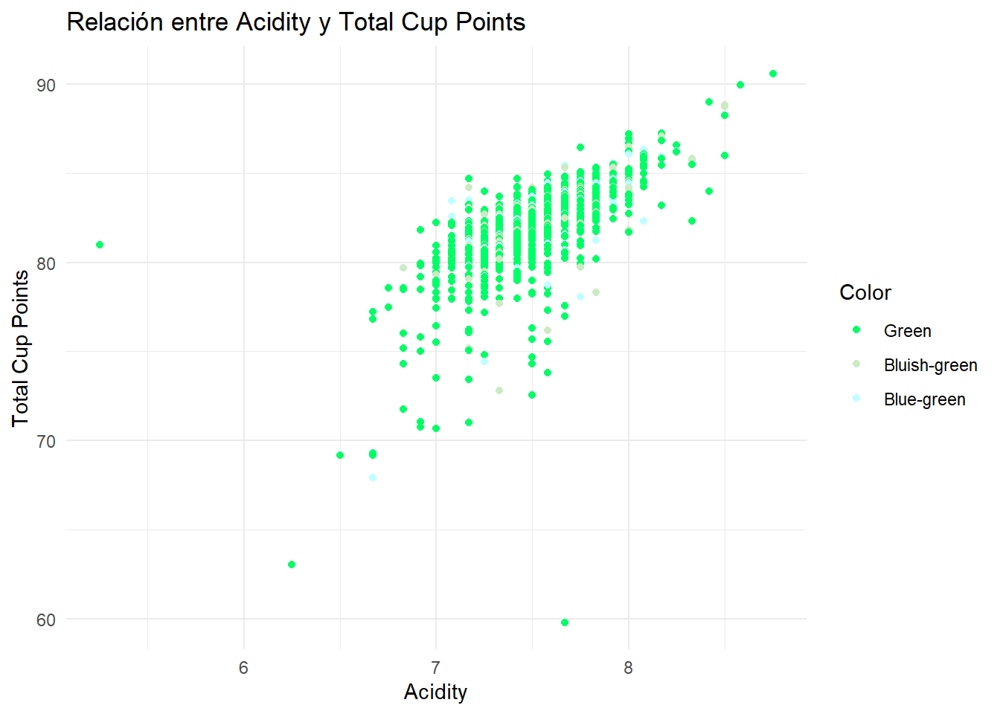
Notemos que a media que incremente el puntaje de acidez, también tiende a incrementar el puntaje total del café, lo que parece indicar una relación lineal y positiva entre las variables observadas.
cor(datos$total_cup_points, datos$acidity)[1] 0.7970242Con la correlación de Pearson de \(r=0.797\) que confirmamos la relación es relativamente fuerte y positiva entre acidity y total_cup_points, de modo que, en general, los cafés con mayores calificaciones de acidez, tienden también a obtener puntajes totales más altos.
No obstante, respecto a la variable color2, se observa un claro predominio de la categoría Green, mientras que Bluish-green y Blue-green aparecen con mucha menor frecuencia, por lo que no se aprecia una diferenciación visual fuerte entre colores en la relación analizada.
Python
import matplotlib.patches as mpatches
# Preparación de datos
datos2 = datos[
(datos["total_cup_points"] > 0) & (datos["acidity"] > 0) & (~datos["color2"].isna())
][["total_cup_points", "acidity", "color2"]]
plt.figure(figsize=(8,6))
plt.scatter(
datos2['acidity'],
datos2['total_cup_points'],
c=datos2['color2'],
s=20,
alpha=0.7
)
plt.title("Relación entre Acidity y Total Cup Points")
plt.xlabel("Acidity")
plt.ylabel("Total Cup Points")
legend_elements = [
mpatches.Patch(color="#00FF66", label="Green"),
mpatches.Patch(color="#CCEBC5", label="Bluish-green"),
mpatches.Patch(color="#BFFFFF", label="Blue-green")
]
plt.legend(handles=legend_elements, title="Color")
plt.grid(False)
plt.tight_layout()
plt.show()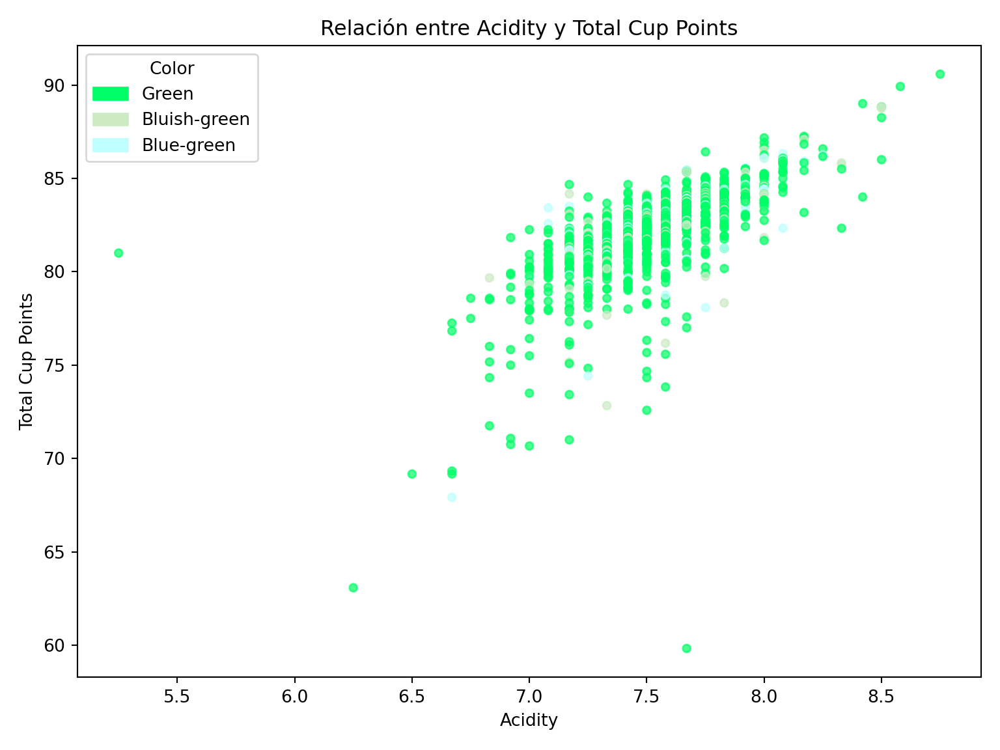
datos[['total_cup_points', 'acidity']].corr() total_cup_points acidity
total_cup_points 1.000000 0.797024
acidity 0.797024 1.000000Actividad 7
Elabore una visualización de densidad con ggplot2 de la variable bag_weight2 diferenciando a los valores de species.
R
A partir del resumen descriptivo summary(datos$bagweight2), observamos una distribución asimétrica con valores extremadamente grandes. El 75% de los datos es menor o igual a 69 kg, mientras que hay valores por encima de los 1000 kg, generando una diferencia en la escala de los datos.
Es por ello que se decidió utilizar una escala logarítmica en el eje x, esto permitió reducir este efecto de valores extremos y mejorar la visibilización del gráfico. Dado que log(0) es indefinido, las observaciones con valor igual a 0 (4 observaciones) no fueron consideradas dentro de la transformación logarítmica, para fines prácticos.
Con esto, podemos observar dos principales concentraciones de pesos de bolsa: entre 1 a 4 kg, y otra entre 50 a 100 kg. Siendo la especie Arabica aquella con menor dispersión, es decir pesos más estandarizados mientras que la especie Robusta, tiene pesos con mayor variación.
# Resumen adicional
summary(datos$bag_weight2) Min. 1st Qu. Median Mean 3rd Qu. Max.
0.00 1.00 45.36 178.75 69.00 19200.00 Gráfico de densidad en escala logarítmica:
datos |>
filter(bag_weight2 > 0) |>
ggplot(aes(x = bag_weight2, fill = species)) +
geom_density(alpha = 0.5) +
scale_x_log10(limits = c(1, 20000)) +
labs(
title = "Distribución de bag_weight2 por especie de café",
x = "Peso de bolsa (kg, escala log10)",
y = "Densidad"
) +
theme_minimal(base_size = 13) +
theme(plot.title = element_text(
hjust = 0.5,
# Mitad del título
face = "bold",
size = 16
))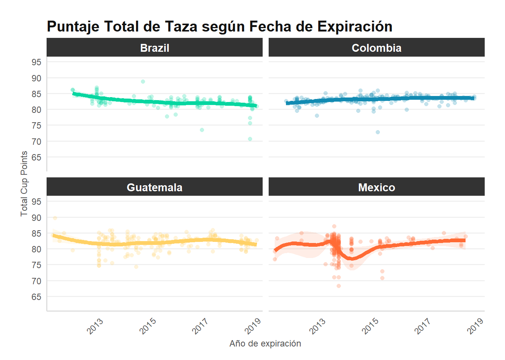
Python
datos_plot = datos[datos["bag_weight2"] > 0] # Indefinido log(0)
sns.kdeplot(
data=datos_plot,
x=np.log10(datos_plot["bag_weight2"]), # Escala log
hue="species",
fill=True,
alpha=0.5,
common_norm=False
)
plt.xlabel("bag_weight2 (log10)")
plt.ylabel("Densidad")
plt.title("Distribución de bag_weight2 por especie de café")
plt.show()
plt.close()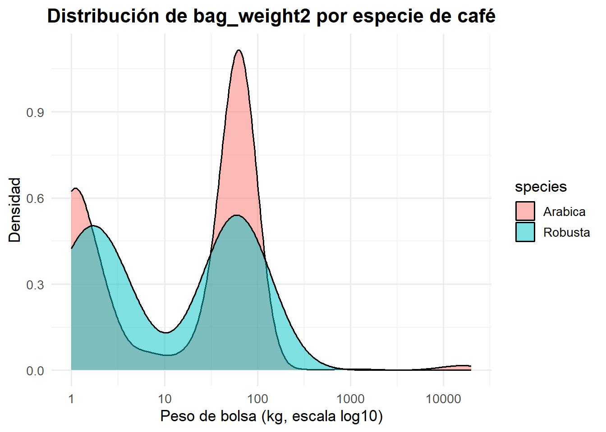
Actividad 8
Elabore una visualización que relacione el año/mes de expiración con el total_cup_points sólo de los granos mexicanos, brasileños, colombianos y guatemaltecos.
R
paises <- c("Mexico", "Brazil", "Colombia", "Guatemala")
colores <- c(
"Mexico" = "#FF6B35",
"Brazil" = "#06D6A0",
"Colombia" = "#118AB2",
"Guatemala" = "#FFD166"
)
datos_act8 <- datos %>%
mutate(
expiration_parsed = mdy(str_replace(expiration, "(\\d+)(st|nd|rd|th)", "\\1")),
exp_ym = floor_date(expiration_parsed, "month")
) %>%
filter(country_of_origin %in% paises,
!is.na(exp_ym),
!is.na(total_cup_points))
# Media global como referencia
media_global <- mean(datos_act8$total_cup_points, na.rm = TRUE)p8 <- ggplot(
datos_act8,
aes(
x = exp_ym,
y = total_cup_points,
color = country_of_origin,
fill = country_of_origin
)
) +
geom_point(alpha = 0.25,
size = 1.5,
shape = 16) +
geom_smooth(
method = "loess",
se = TRUE,
alpha = 0.12,
linewidth = 1.8
) +
scale_color_manual(values = colores) +
scale_fill_manual(values = colores) +
scale_x_date(
date_breaks = "2 years",
date_labels = "%Y",
expand = expansion(mult = 0.03)
) +
scale_y_continuous(
limits = c(62, 95),
breaks = seq(65, 95, by = 5)
) +
facet_wrap(~ country_of_origin, ncol = 2) +
labs(
title = "Puntaje Total de Taza según Fecha de Expiración",
x = "Año de expiración",
y = "Total Cup Points"
) +
theme_minimal(base_size = 12) +
theme(
plot.background = element_rect(fill = "white", color = NA),
panel.background = element_rect(fill = "white", color = NA),
panel.grid.major.y = element_line(color = "#F0F0F0", linewidth = 0.7),
panel.grid.major.x = element_blank(),
panel.grid.minor = element_blank(),
panel.border = element_blank(),
axis.line.x = element_line(color = "#DDDDDD"),
axis.line.y = element_line(color = "#DDDDDD"),
plot.title = element_text(face = "bold", size = 15,
color = "#111111", margin = margin(b = 4)),
plot.subtitle = element_text(size = 10.5, color = "#777777",
face = "italic", margin = margin(b = 12)),
plot.caption = element_text(size = 7.5, color = "#BBBBBB",
margin = margin(t = 10)),
plot.margin = margin(20, 20, 12, 20),
axis.title = element_text(size = 9, color = "#555555"),
axis.text.x = element_text(angle = 45, hjust = 1,
size = 8.5, color = "#555555"),
axis.text.y = element_text(size = 8.5, color = "#555555"),
strip.text = element_text(face = "bold", size = 11,
color = "white",
margin = margin(4, 4, 4, 4)),
strip.background = element_rect(fill = "#333333", color = NA),
legend.position = "none"
)
p8
cat(sprintf("Registros graficados: %d\n", nrow(datos_act8)))
cat("\nConteo por país:\n")
print(table(datos_act8$country_of_origin))Registros graficados: 732
Conteo por país:
Brazil Colombia Guatemala Mexico
132 183 181 236 Python
datos["expiration_parsed"] = pd.to_datetime(
datos["expiration"].str.replace(r"(\d+)(st|nd|rd|th)", r"\1", regex=True),
errors="coerce",
)
datos["exp_ym"] = datos["expiration_parsed"].dt.to_period("M").dt.to_timestamp()
paises = ["Mexico", "Brazil", "Colombia", "Guatemala"]
colores = {
"Mexico": "#FF6B35",
"Brazil": "#06D6A0",
"Colombia": "#118AB2",
"Guatemala": "#FFD166",
}
d = (
datos[datos["country_of_origin"].isin(paises)]
.dropna(subset=["exp_ym", "total_cup_points"])
.copy()
)
fig = plt.figure(figsize=(16, 9), facecolor="white")
fig.suptitle(
"Puntaje Total de Taza según Fecha de Expiración",
fontsize=17,
fontweight="bold",
color="#111111",
y=0.98,
)
gs = GridSpec(
2,
2,
figure=fig,
hspace=0.50,
wspace=0.28,
left=0.07,
right=0.97,
top=0.92,
bottom=0.10,
)
for idx, pais in enumerate(paises):
ax = fig.add_subplot(gs[idx // 2, idx % 2])
sub = d[d["country_of_origin"] == pais].sort_values("exp_ym")
color = colores[pais]
ax.scatter(
sub["exp_ym"],
sub["total_cup_points"],
color=color,
alpha=0.30,
s=20,
zorder=3,
linewidths=0,
)
monthly = sub.groupby("exp_ym")["total_cup_points"].median().reset_index()
if len(monthly) > 3:
x_num = mdates.date2num(monthly["exp_ym"])
k = min(3, len(monthly) - 1)
spl = make_interp_spline(x_num, monthly["total_cup_points"], k=k)
x_new = np.linspace(x_num.min(), x_num.max(), 300)
ax.plot(
mdates.num2date(x_new), spl(x_new), color=color, linewidth=2.2, zorder=4
)
ax.fill_between(mdates.num2date(x_new), spl(x_new), alpha=0.08, color=color)
ax.set_facecolor("white")
ax.spines[["top", "right"]].set_visible(False)
ax.spines["left"].set_color("#DDDDDD")
ax.spines["bottom"].set_color("#DDDDDD")
ax.grid(axis="y", color="#F0F0F0", linewidth=0.7)
ax.grid(axis="x", visible=False)
ax.tick_params(colors="#555555", labelsize=8.5)
ax.xaxis.set_major_formatter(mdates.DateFormatter("%Y"))
ax.xaxis.set_major_locator(mdates.YearLocator(2))
plt.setp(ax.xaxis.get_majorticklabels(), rotation=45, ha="right")
ax.set_ylim(62, 95)
ax.set_yticks(range(65, 96, 5))
ax.set_title(
f" {pais}",
fontsize=12,
fontweight="bold",
color="white",
pad=0,
loc="left",
bbox=dict(boxstyle="square,pad=0.4", facecolor=color, edgecolor="none"),
)
ax.set_ylabel("Total Cup Points", fontsize=9, color="#555555")
ax.set_xlabel("Año de expiración", fontsize=9, color="#555555")
ax.text(
0.98,
0.05,
f"n = {len(sub)}",
transform=ax.transAxes,
ha="right",
va="bottom",
fontsize=8,
color="#AAAAAA",
)
plt.show()
plt.close()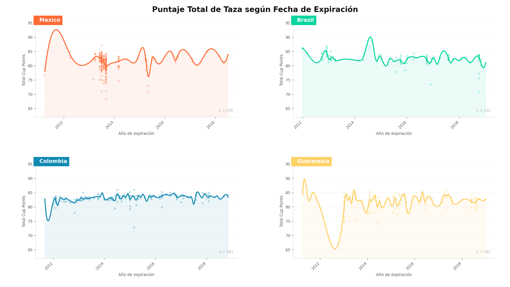
Actividad 9
Elabore una visualización con ggplot2 que relacione el mes de expiración con el altitude_mean_meters, altitude_low_meters y altitude_high_meters sólo de los granos mexicanos, brasileños, colombianos y guatemaltecos de los años de expiración 2016 y 2017.
R
Vamos a crear un dataframe que utilizaremos para crear la gráfica llamado datos_altitud.
datos_altitud <- datos |>
select(expiration_year, expiration_month, country_of_origin,
altitude_mean_meters, altitude_low_meters, altitude_high_meters) |>
filter(
country_of_origin %in% c("Mexico", "Brazil", "Colombia", "Guatemala"),
expiration_year %in% c(2016, 2017)
) |>
drop_na() |>
pivot_longer(
cols = starts_with("altitude"),
names_to = "altitude",
values_to = "meters"
) |>
mutate(
altitude = str_extract(altitude, "(?<=_)[a-z]+(?=_)"), # Quitar 'altitude_' y '_meters'
altitude = case_when(
altitude == "low" ~ "Bajo",
altitude == "mean" ~ "Promedio",
altitude == "high" ~ "Alto"
),
altitude = factor(altitude, levels = c("Alto", "Promedio", "Bajo"), ordered = TRUE),
expiration_month = month(expiration_month, label = TRUE, abbr = FALSE),
expiration_month = factor(
str_to_title(expiration_month),
levels = c("Enero", "Febrero", "Marzo", "Abril", "Mayo", "Junio", "Julio",
"Agosto", "Septiembre", "Octubre", "Noviembre", "Diciembre"),
ordered = TRUE
),
expiration_year = factor(expiration_year),
country_of_origin = str_replace_all(country_of_origin, c("Mexico" = "México", "Brazil" = "Brasil"))
) |>
rename(month = expiration_month, year = expiration_year)
head(datos_altitud)datos_altitud |>
ggplot(aes(x = month, y = meters)) +
# Primero graficamos los boxplots
geom_boxplot() +
# Después graficamos los puntos agregando estéticas extras.
# Con geom_jitter() los puntos se esparcen un poco para que no se confundan entre sí
geom_jitter(aes(color = country_of_origin, shape = country_of_origin), width = 0.05) +
# Crear facetas. Además, agregarles un título general, en este caso 'Nivel de altitud'
ggh4x::facet_nested("Nivel de altitud" + altitude ~ .) +
# Cambiamos los colores que aparecen en la leyenda
scale_colour_manual(
values = c(
"México" = "deeppink2",
"Brasil" = "#009739",
"Colombia" = "#003087",
"Guatemala" = "#70b4e6"
)
) +
# Etiquetas y títulos
labs(
title = "Relación de Altitudes por Mes de Expiración",
subtitle = "Granos de México, Brasil, Colombia, Guatemala en los años de expiración 2016 y 2017",
x = "Mes de expiración",
y = "Altitud en metros",
color = "País de origen",
shape = "País de origen"
) +
# Reducir espacio entre paneles y rotar etiquetas del eje x
theme(
panel.spacing = unit(0.2, units = "lines"),
axis.text.x = element_text(angle = 90, vjust = 0.3, hjust = 1)
)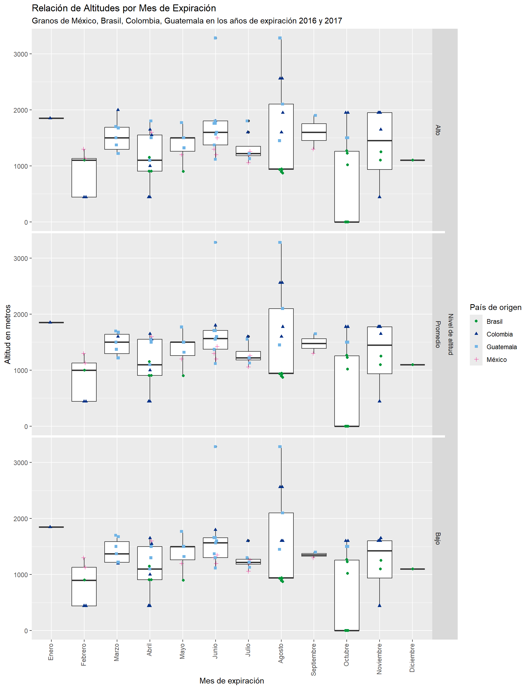
Python
Copiamos el dataframe datos_altitud de R a un dataframe de pandas.
datos_altitud = r.datos_altitudPreprocesamiento para realizar la gráfica:
# Definimos un orden para la columna month
month_order = [
"Enero", "Febrero", "Marzo", "Abril",
"Mayo", "Junio", "Julio", "Agosto",
"Septiembre", "Octubre", "Noviembre", "Diciembre"
]
datos_altitud["month"] = pd.Categorical(
datos_altitud["month"],
categories=month_order,
ordered=True
)
# También para los niveles de altura
orden_nivel_altitud = ["Alto", "Promedio", "Bajo"]
datos_altitud["altitude"] = pd.Categorical(
datos_altitud["altitude"],
categories=orden_nivel_altitud,
ordered=True
)
datos_altitud = datos_altitud.rename(columns={"altitude": "Nivel de altitud"})Se optó por guardar la siguiente gráfica en un archivo png y referenciarla desde markdown, debido a que quarto la renderiza e imprime tres veces en el html.
plt.style.use('ggplot') # Para que la gráfica se vea como las de ggplot
palette = {
"México": "#ee1289",
"Brasil": "#009739",
"Colombia": "#003087",
"Guatemala": "#70b4e6"
}
# Boxplots
g = sns.catplot(
data=datos_altitud,
x="month",
y="meters",
row="Nivel de altitud", # Una gráfica por cada nivel de altitud
kind="box",
order=month_order, # Tuvimos que definir un orden
height=3,
aspect=2,
sharey=False,
color="white"
)
# Para graficar los puntos. Se hace para cada nivel de altura
for altitude_value, ax in g.axes_dict.items():
subset = datos_altitud[
datos_altitud["Nivel de altitud"] == altitude_value
]
# Gráfica de puntos
sns.stripplot(
data=subset,
x="month",
y="meters",
hue="country_of_origin",
jitter=0.1,
order=month_order,
palette=palette,
ax=ax
)
# Quitamos leyendas duplicadas
if ax.get_legend() is not None:
ax.get_legend().remove()
# Creamos una misma leyenda para todas las subgráficas
handles, labels = ax.get_legend_handles_labels()
g.figure.legend(
handles,
labels,
title="País de origen",
loc="center left",
bbox_to_anchor=(0.85, 0.5) # Cambiar posición de la leyenda
)
# Etiquetas y títulos
g.set_ylabels("")g.set_xlabels("Mes de expiración")g.figure.supylabel(
"Altitud en metros",
x=0.02
)
g.figure.subplots_adjust(
top=0.88,
right=0.82,
hspace=0.15
)
g.figure.suptitle(
"Relación de Altitudes por Mes de Expiración",
x=0.08,
ha="left",
fontsize=16
)
g.figure.text(
0.08,
0.92,
"Granos de México, Brasil, Colombia y Guatemala \nen los años de expiración 2016 y 2017",
ha="left",
fontsize=11
)
# Rotamos etiquetas del eje x
for ax in g.axes.flat:
ax.tick_params(axis="x", rotation=90)
plt.savefig("actividad09_python.png", bbox_inches='tight')
plt.show()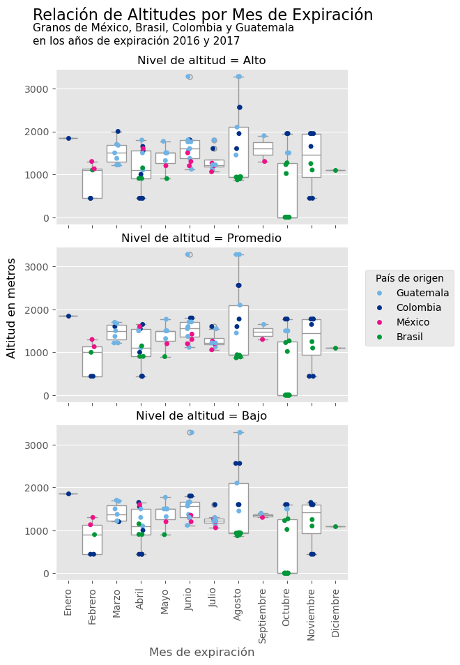
Actividad 10
Elabore una visualización con ggplot2 que relacione el aftertaste, acidity, body y species en un mismo canvas.
R
# Preparación de datos
datos_act10 <- datos %>%
select(aftertaste, acidity, body, species) %>%
filter(!is.na(species)) %>%
filter(aftertaste > 0, acidity > 0, body > 0)
# Construcción del gráfico
graf_act10 <- ggplot(datos_act10, aes(x = acidity, y = aftertaste)) +
# Puntos con transparencia para manejar el solapamiento (overplotting)
geom_point(aes(color = body),
stroke = 0.2,
alpha = 0.4,
size = 3) +
# Tendencia estadística
geom_smooth(
method = "lm",
formula = y ~ x,
color = "black",
linewidth = 0.5,
se = TRUE,
fill = "gray80",
linetype = "dashed"
)+
facet_wrap( ~ species, nrow = 1)+
# Escala de color continua
scale_color_viridis_c(option = "plasma") +
# Etiquetas
labs(
title = "Relación entre Acidez, Sabor Residual y Cuerpo por Especie de Café",
subtitle = "Análisis de dispersión con ajuste lineal por mínimos cuadrados",
x = "Puntaje de Acidez (Acidity)",
y = "Puntaje de Sabor Residual (Aftertaste)",
color = "Puntaje del Cuerpo (Body)"
) +
# Tema
theme_minimal(base_size = 11, base_family = "sans")+
theme(
# Títulos y subtítulos
plot.title = element_text(face = "bold", size = 13, hjust = 0, margin = margin(b = 5)),
plot.subtitle = element_text(color = "gray30", size = 10, margin = margin(b = 15)),
# Ejes
axis.line = element_line(color = "black", linewidth = 0.4),
axis.title = element_text(color = "gray20", face = "plain", size = 10),
axis.text = element_text(color = "gray20", size = 9),
# Elimina líneas secundarias
panel.grid.minor = element_blank(),
# Facetas
strip.text = element_text(face = "bold.italic", size = 11, color = "white"),
strip.background = element_rect(fill = "gray20", color = NA),
# Leyendas
legend.position = "bottom",
legend.box = "horizontal",
legend.title = element_text(size = 9, color = "gray20"),
legend.text = element_text(size = 8, color = "gray20")
)
graf_act10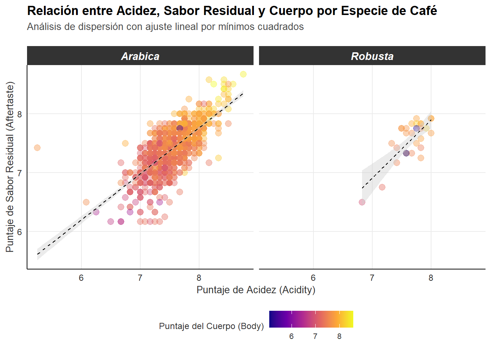
Python
Se optó por guardar la siguiente gráfica en un archivo png y referenciarla desde markdown, debido a que quarto la renderiza e imprime tres veces en el html.
# Preparación de datos
datos_act10_Py = datos[
(datos["aftertaste"] > 0) & (datos["acidity"] > 0) & (datos["body"] > 0)
][["aftertaste", "acidity", "body", "species"]]
# Construcción del gráfico
# Configurar el estilo del lienzo
sns.set_theme(style="whitegrid", font_scale=1.0, font="sans-serif")
# Crear facetas por 'species'
g = sns.FacetGrid(
data=datos_act10_Py,
col="species",
height=5,
aspect=1.1,
margin_titles=True
)
# Gráfico de dispersión entre 'acidity' y 'aftertaste'
g.map_dataframe(
sns.scatterplot,
x="acidity",
y="aftertaste",
hue="body",
palette="viridis", # Paleta de color continuo para representar 'body'
alpha=0.5,
s=50,
edgecolor="w",
linewidth=0.5
)# Título principal del Canvas
g.fig.suptitle(
"Relación entre Acidez, Sabor Residual y Cuerpo por Especie de Café",
fontsize=13,
y=1.05
)
# Títulos de los ejes
g.set_axis_labels("Puntaje de Acidez (Acidity)","Puntaje de Sabor Residual (Aftertaste)",fontsize=10)# Personalizar cada faceta
for ax in g.axes.flat:
# Obtener el nombre de la especie del formato automático de Seaborn
especie_nombre = ax.get_title().split("=")[-1].strip()
# Ajustar títulos de cada faceta
ax.set_title(especie_nombre, fontsize=11, pad=10)
# Malla
ax.grid(True, alpha=0.1, color='gray')
# Etiquetas de los ejes
ax.tick_params(axis='both', labelsize=9)
# Dibujar un borde sutil para definir el recuadro de cada gráfica
ax.spines['left'].set_visible(True)
ax.spines['bottom'].set_visible(True)
ax.spines['left'].set_color('gray')
ax.spines['bottom'].set_color('gray')
# Extraemos los límites mínimos y máximos para la escala de 'body'
vmin = datos["body"].min()
vmax = datos["body"].max()
# Agregar una barra de color para la leyenda de 'body'
sm = plt.cm.ScalarMappable(cmap="viridis", norm=plt.Normalize(vmin=vmin, vmax=vmax))
sm.set_array([])
# Posicionar la barra de color
cbar = g.fig.colorbar(sm, ax=g.fig.axes, orientation="vertical", shrink=0.3, pad=0.05)
cbar.set_label("Puntaje del Cuerpo (Body)", fontsize=10, labelpad=10)
cbar.ax.tick_params(labelsize=8)
cbar.outline.set_visible(False)
# Guardar gráfica en un archivo png
plt.savefig("actividad10_python.png", bbox_inches='tight')
plt.show()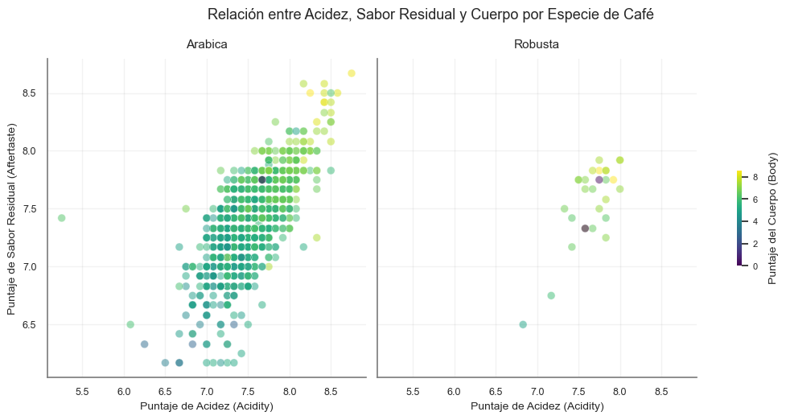